Штаб-квартира
Москва, ЦМТ
Краснопресненская наб., 12
6-й подъезд, 11 этаж, офис 1148
Гостиница «Международная»
Репрезентативный офис в центре
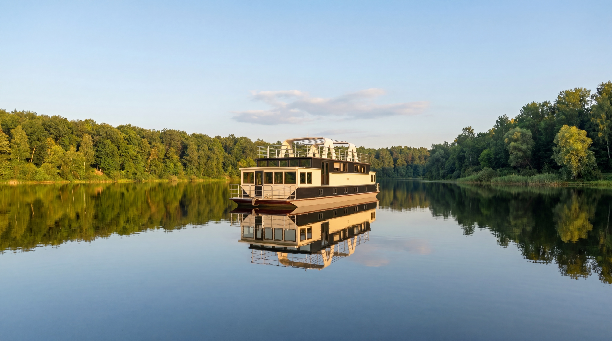
KARTEL · Экспедиционный проект
Право на свободу маршрута.
Обзор
Корпус из нержавеющей стали 12х18н10т. Надстройка из авиационного алюминия АМг5М. Зимний пакет до −30 °C. 5 кают, 2 камбуза, сауна, два подвесных мотора 250–350 л.с.
Дом, который идёт за впечатлением — туда, где обычная лодка не пройдёт.
Дуб и тик
Банный комплекс
Нержавеющая сталь
Экстерьер
3 палубы · солярий · кринолин для купания
Интерьер
5 кают · 5 санузлов · 2 камбуза · сауна · рубка управления
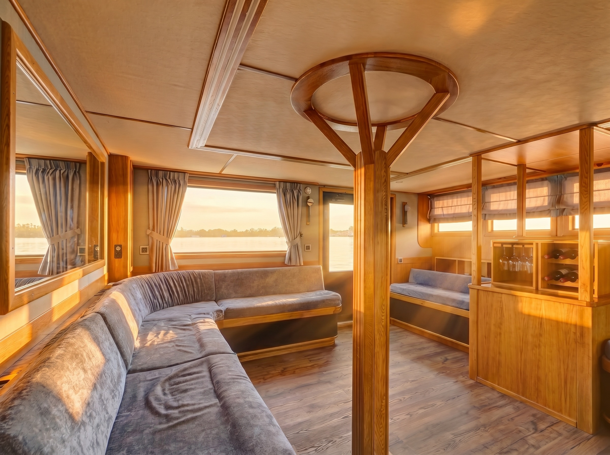
Главная палуба
Планировка
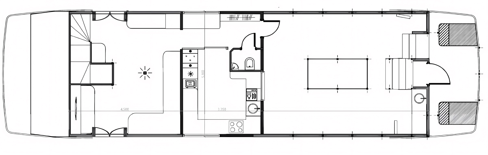
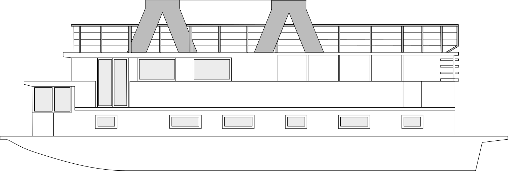
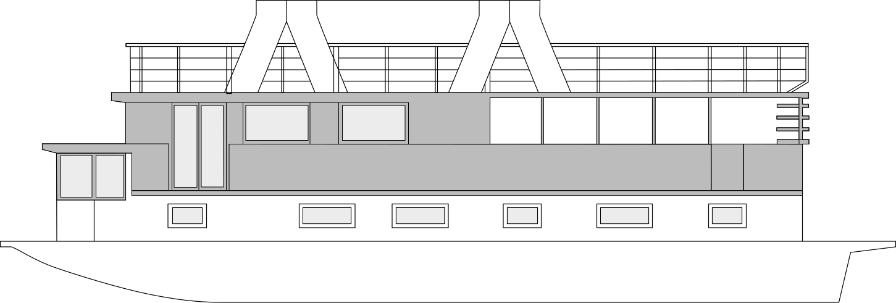
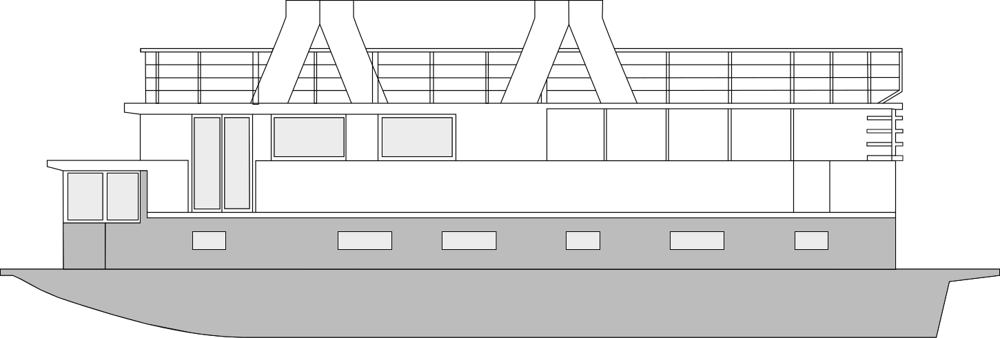
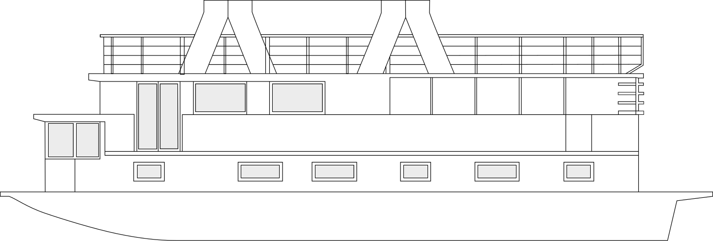
Кают-компания, верхний камбуз, обеденная на 12 человек, санузел
Спецификация
Ключевые характеристики судна.
Нажмите, чтобы увеличить
Тик · Модульная мебель · Москитные сетки
Дополнительные опции
Каждое судно собирается под заказ — из материалов, которые становятся только красивее со временем.
Полный список — по запросу
Три точки присутствия KARTEL: от офиса продаж в Москве до исторической верфи на Волге.
Штаб-квартира
Краснопресненская наб., 12
6-й подъезд, 11 этаж, офис 1148
Гостиница «Международная»
Репрезентативный офис в центре
Шоурум на воде
ул. Большая Затонская
(район Затона)
51.544010, 46.081743
Тест-драйв в реальных условиях
Производство
г. Саратов
Производственная база
Историческая верфь с 1992 года
Связаться с KARTEL
Быстро. По делу. Без спама.
Часто задаваемые вопросы
Если ваш вопрос здесь не нашёлся — напишите. Ответим лично.
Стоимость рассчитывается индивидуально по комплектации и срокам сдачи. Свяжитесь с верфью для коммерческого предложения.
Корабельная Артель, верфь в Саратове, ул. Огородная, 3. Шоурум — ул. Большая Затонская. Офис продаж — Москва, Краснопресненская наб., 12.
Базовая планировка и архитектура серии не изменяются — мы строим по утверждённому проекту. Под заказчика настраиваются отделочные материалы, цветовые палитры, наполнение интерьера и пакеты оборудования — из доступных опций, согласованных верфью. Полный список — в разделе «Дополнительные опции».
Большинство хаусботов — летние, алюминиевые, ограниченные тёплой водой. Expedition 65 Lux построен на нержавеющей стали 12Х18Н10Т, рассчитан на 4 сезона эксплуатации до −30 °C, автономность 7+ суток. Инженерная база — та же, что у «Сибирского Исследователя», созданного для Русского географического общества.
Да. Для судов этого класса в РФ нужны права ГИМС категории «маломерное судно» (до 20 м). Мы помогаем с обучением, можем подобрать профессионального капитана или организовать обслуживающую команду.
Верфь «Корабельная Артель» построила «Сибирский Исследователь» — 18-метровое стальное судно класса «река-море» для арктических миссий РГО. Тот же инженерный подход — корпус из нержавеющей стали, автономность на недели вперёд, работа в высоких широтах — лёг в основу Expedition 65 Lux.
Да, конечно. Показ и тест-драйв проводим в Саратове по предварительной записи — покажем корпус на верфи, интерьер в шоуруме и ответим на вопросы лично. Оставьте заявку в разделе «Связаться с верфью», и мы согласуем удобную дату.
Верфь «Корабельная Артель», Саратов, с 1992 года. За тридцать лет — десятки проектов: от круизеров и траулеров до экспедиционных кораблей класса «река-море».
EST. 1992
«Люди не покупают катер ради техники — они покупают новый сценарий жизни: свободу, уверенность и удовольствие от контроля над собственным маршрутом.»
Корабельная Артель · 1992
Верфь основана в Саратове в 1992 году. За три десятилетия — десятки уникальных судов, спроектированных, построенных и спущенных на воду собственными силами.
Примеры спроектированных и построенных судов
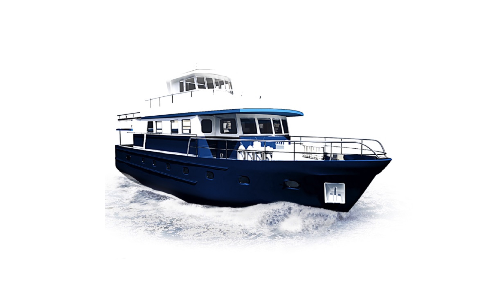
Корабли класса люкс
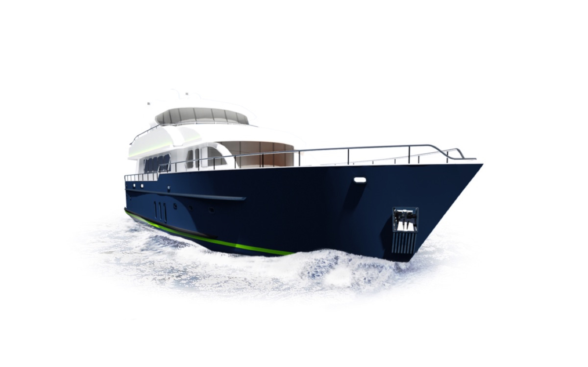
Экспедиционные корабли
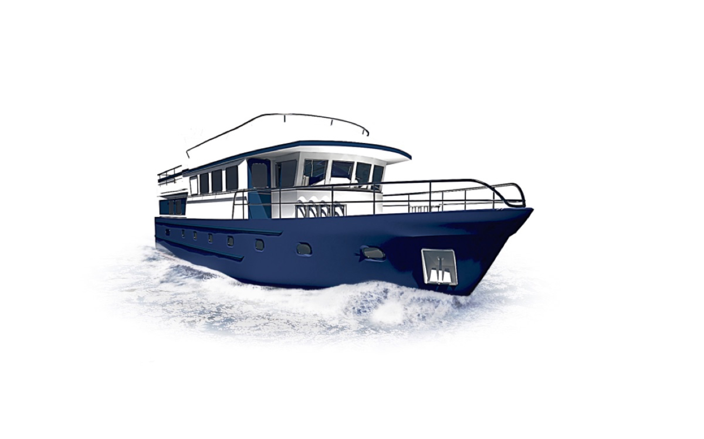
Круизеры
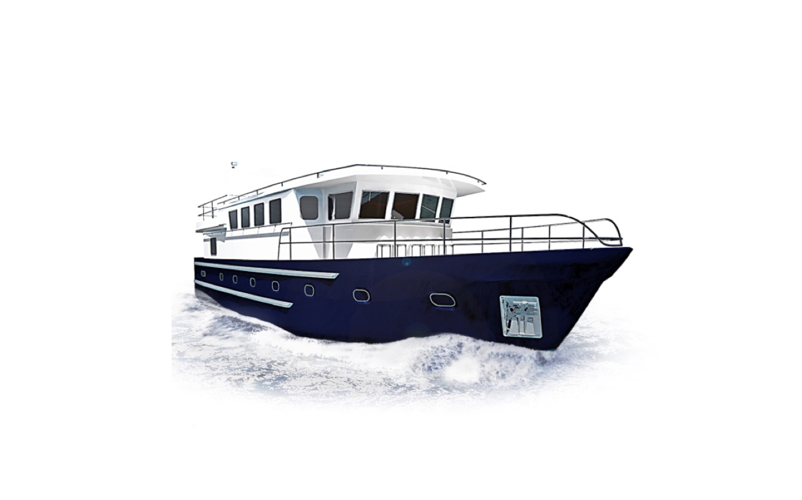
Траулеры
Наследие и история
История проекта началась в суровых водах Енисея. Наш предыдущий проект, «Сибирский исследователь», был создан для РГО.
Мы применили тот же бескомпромиссный инженерный подход: корпус из нержавеющей стали для прохождения льдов, автономность на недели вперёд и технологии выживания.
Expedition 65 Lux — гражданская версия экспедиционного судна. Роскошь, защищённая бронёй.
Надёжность
Технологии РГО
Статус
Экспедиционный класс
Стратегическое партнёрство · EST. 1845
Флагман «Сибирский исследователь» — 18-метровый стальной корабль класса «река-море», созданный на наших стапелях для выполнения миссий РГО в высоких широтах Арктики.
«Особенность судна — защитные накладки, усиливающие киль вдвое. Это позволяет работать в условиях сложной навигации, недоступных для обычных яхт.»
18м
Длина судна
09Г2С
Нержавеющая сталь
1300
Миль автономии